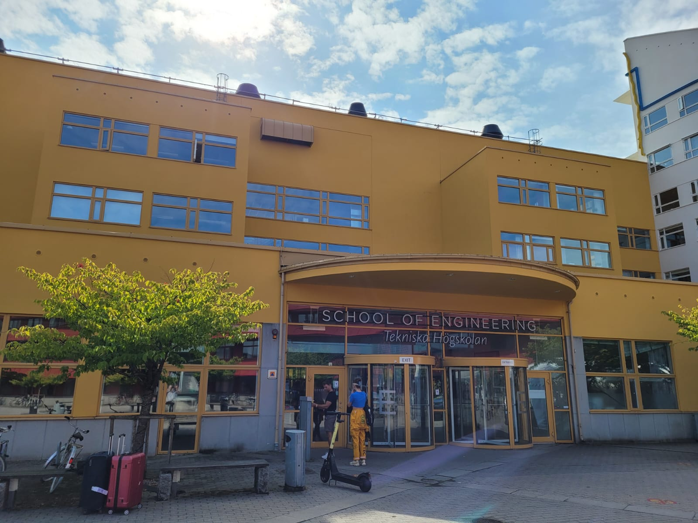
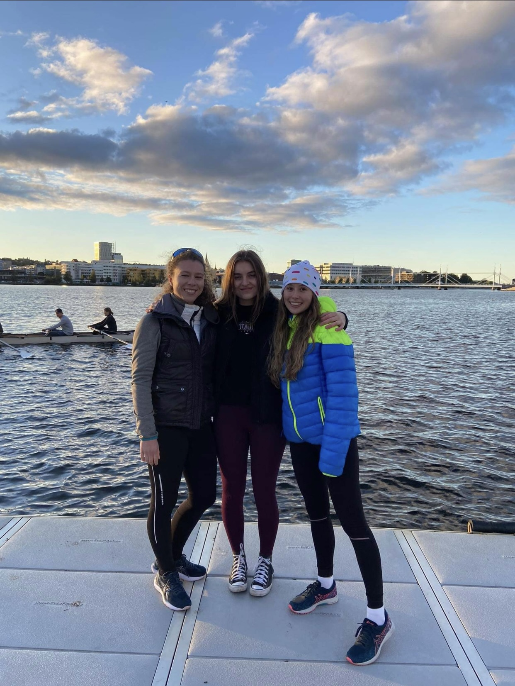
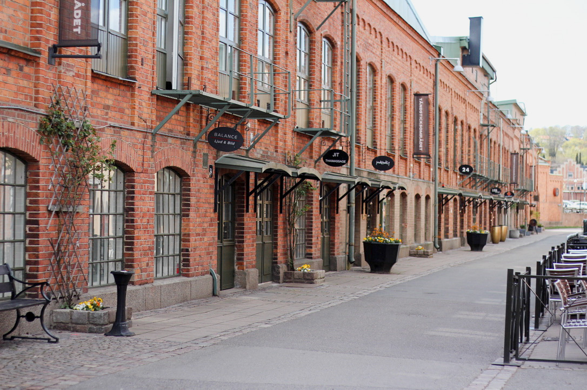
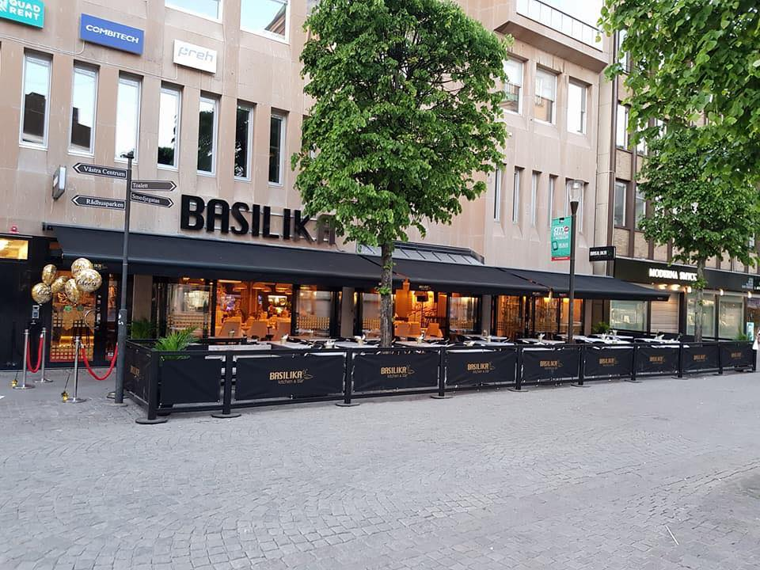
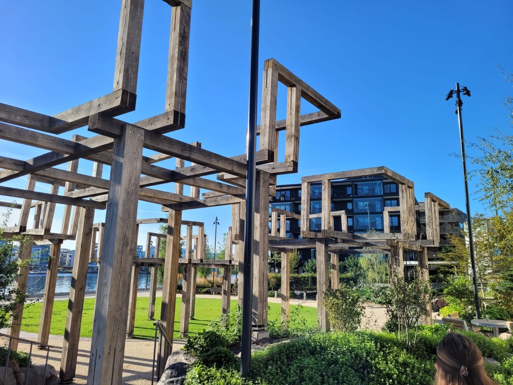

Jönköping
Jönköping is a city where I currently live. I moved here to study at a local university.
What to do in Jönköping?
Even though Jönköping is not a big city, there are still many ways how to spend your time here. Let me present you my favourite ones.
Study at Jönköping university
If you want to learn new things and meet great people, this is the place to go!
Join the rowing team
Take advantage of Jönköping's lakeside location and go rowing. It is good for your body as well as your mind.
Good places to go
The places I would recommend you visit depend very much on your interests. I have therefore chosen three different places so that everyone can find something they enjoy.
Tändsticksfabriken
Take a look inside the former match factory.
https://jkpg.com/sv/jonkoping-huskvarna/tandsticksomradet-jonkoping/
Hassalafall
Take a walk through the forest and enjoy two small waterfalls.

Asecs
Visit the local shopping centre, which includes a Swedish Ikea.
https://rstudio.se/projekt/asecs/
Great place to eat
Enhance your visit to Jönköping with good food!
Basilika
My favorite restaurant here is the Asian buffet near the school.
https://basilikakitchenandbar.com
Rådhusparken
If you also like to eat outdoors, have a picnic in a park in the city centre or around the lake.
